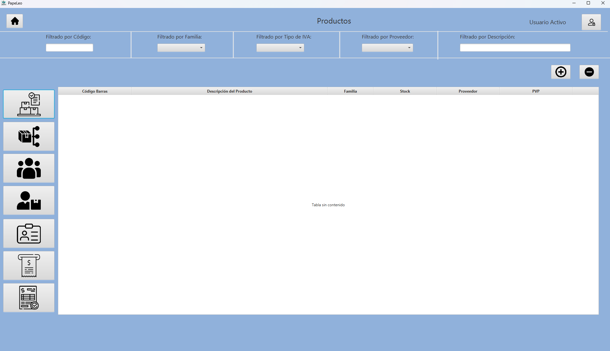
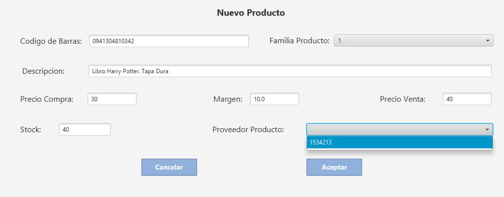
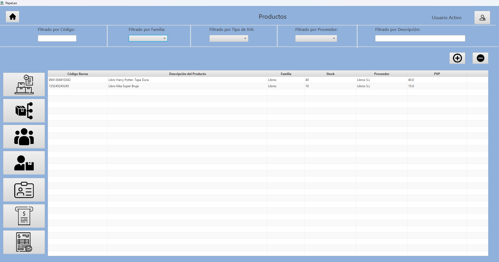
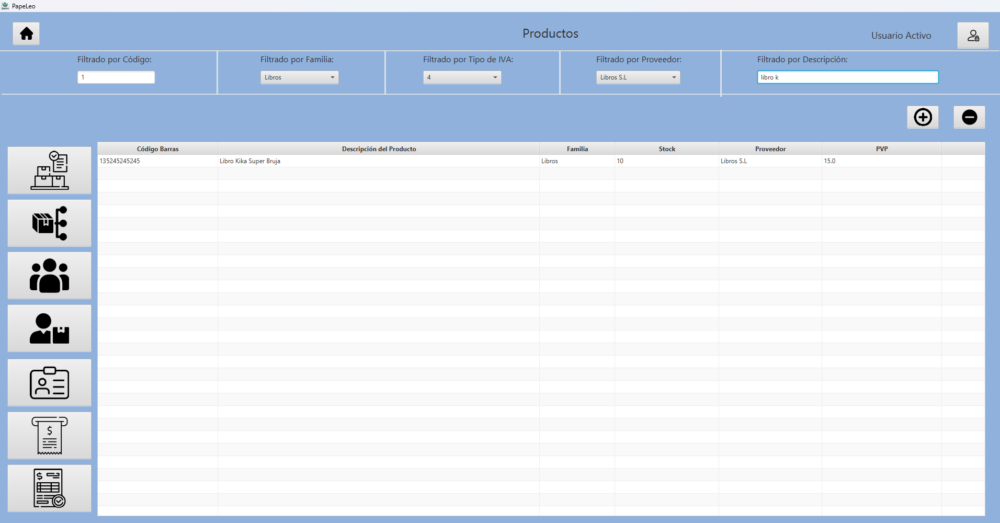

Guía para: ¿Cómo puedo consultar y modificar mi inventario?
En esta guía te explicaremos paso a paso cómo consultar y modificar los diferentes elementos de tu inventario
1. Accede a la sección "Inventario"

En la pantalla principal selecciona el icono situado a la derecha con el texto "Inventario"
2. Elige qué apartado del Inventario quieres consultar y/o añadir nuevos elementos

La pantalla de Inventario consta de un panel superior con varios filtros dependiendo de que elemento del Inventario estemos gestionando, botones de "+" y "-" para añadir nuevos elementos o borrar alguno ya insertado y una barra en el lateral izquierdo con varios iconos que nos dejan cambiar entre los diferentes elementos del inventario
Respecto a los iconos situados a la izquierda, de arriba hacia abajo, estos botones nos dejarán acceder a las pantallas de productos, familia de productos, clientes, proveedores, usuarios, tickets y facturas, en ese respectivo orden. Para este caso usaremos la pantalla de Productos
3. Como añadir un nuevo elemento

Tras haber pulsado el boton de "+" accederemos a una pantalla de dialogo diferente para cada tipo de elemento del Inventario, en este ejemplo de Producto que es de los más complejos tenemos campos de texto a rellenar y desplegables para elegir entre varias Familias de Producto y Proveedores que debemos haber creado con anterioridad
Una vez satisfechos con la información contenida en los campos, podemos dar a "Aceptar" para lanzar el nuevo elemento a la BBDD o a "Cancelar" en caso contrario.
4. Como filtrar entre elementos

Para este ejemplo hemos introducido un par de elementos dentro de la tabla de Productos

Y como podemos observar, utilizando los difernetes filtros de arriba hemos conseguido que se muestre unicamente el Libro de Kika Super Bruja. Se puede utilizar un único filtro o varios, la tabla únicamente mostrará los elementos que cumplan todos estos y no los que cumplan únicamente uno.